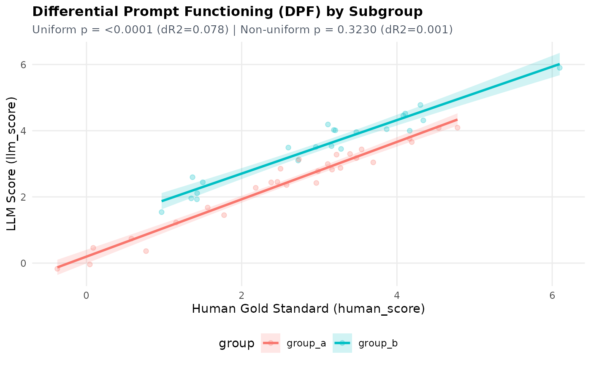

Visualizes subgroup measurement invariance diagnostics:
"curves"(default): LLM score vs. human gold-standard curves stratified by subgroup, revealing uniform parallel shifts and non-uniform slope differences."bias": Forest plot of subgroup conditional bias at the mean gold standard (95% CIs vs. reference group)."prompts": Per-prompt DPF effect sizes (\(\Delta R^2\)) colored by FDR-flagged status (requiresprompt_colindpf_test()).
Arguments
- object
An
"llm_dpf"object returned bydpf_test().- type
Plot type:
"curves","bias", or"prompts".- ...
Unused; included for S3 consistency.
Value
A ggplot2::ggplot object.
Examples
data(ema_coded)
agg <- aggregate_scores(ema_coded, score_col = "llm_score")
dpf <- dpf_test(agg, score_col = "llm_score", truth_col = "human_score", group_col = "group")
autoplot(dpf)
